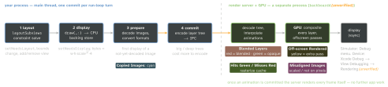
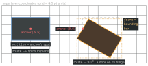
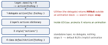

ios-platform · folio
In one line: A CALayer is a model object: a bitmap (contents) plus
geometry and animatable properties — no events, no layout constraints. Each run-loop turn your
changes are committed (layout → display → prepare → commit) to the
out-of-process render server, which interpolates animations and composites every layer
on the GPU. Speed = a cheap commit + as few GPU passes as possible (no needless
blending, offscreen passes, copied or misaligned images).
Download PDF Print view LaTeX source


How it works
- Geometry:
bounds(own coordinates, size) ·position(in the superlayer, where theanchorPointsits) ·anchorPoint(unit space, default (0.5, 0.5); every transform pivots here) ·frameis derived and not directly animatable — animatebounds,position,transform.UIView.frameis undefined oncetransformis not identity: usecenter+bounds. - Properties:
contents(aCGImage),contentsScale(1.0 on a standalone layer — set it to the display scale; a view sets its own),contentsGravity,contentsCenter(9-slice stretch),cornerRadius+cornerCurve = .continuous+maskedCorners,shadow*,transform(CATransform3D;m34 = -1/dfor perspective),sublayerTransform,zPosition. - Specialised layers draw on the GPU, not in
draw(_:):CAShapeLayer(path; animatestrokeEndfor a progress ring),CAGradientLayer,CAReplicatorLayer(instanceCount,instanceDelay: loading dots),CAEmitterLayer,CATextLayer,CATransformLayer(real 3D hierarchy),CAMetalLayer,AVPlayerLayer. - Explicit animations:
CABasicAnimation(keyPath:)(from/to/by),CAKeyframeAnimation(values+keyTimes, or apath),CASpringAnimation(mass, stiffness, damping,settlingDuration),CAAnimationGroup,CATransition(fade, push).add(_:forKey:)copies the animation; the same key replaces the running one. Key paths:"transform.rotation.z","position.x". They drive only the presentation — set the model value yourself. - Timing —
CAMediaTiming, adopted by layers and animations:beginTime(layer time;CACurrentMediaTime() + 0.3delays),duration,repeatCount,autoreverses,fillMode(.backwardsshowsfromValueduring a delay),speed(multiplies down the tree),timeOffset. Pause: setspeedto 0 andtimeOffsetto the layer’s current time (QA1673); scrub by changingtimeOffset. - Blending: the GPU mixes every non-opaque layer with what is beneath. An opaque background colour, alpha 1 and
isOpaquelet it skip that — e.g. give labels in cells a solid background. - Rasterize cache (WWDC14): about 2.5× the screen in size; an entry unused for 100 ms is evicted — so rasterizing things that come and go only re-renders them.
- CADisplayLink fires once per frame: add to
.mainin.commonmode (keeps firing while a scroll view tracks); it retains its target —invalidate()it; animate withtargetTimestamp(the deadline), nottimestamp; iOS 15preferredFrameRateRange = CAFrameRateRange(minimum: maximum:preferred:)is a hint. On iPhone, above 60 Hz needs Info.plistCADisableMinimumFrameDurationOnPhone = YES; UIKit/SwiftUI/CAAnimationpace themselves.
Traps
- Standalone layer blurry on Retina —
contentsScaleis still 1.0. - Setting
anchorPointand wondering why the view moved. - Animating
layer.frame, or readingview.frameafter a rotation. CADisplayLinkin.defaultmode stops during scrolling; never invalidated → its target (your VC) leaks.- Implicit + explicit animation on one property fight — disable actions for the model set.
isOpaque = trueon a view that is not really opaque — undefined results.
Geometry on a hinge

Changing anchorPoint keeps position fixed, so the layer jumps:
compensate position by the same offset (× bounds.size).
The action search

Example — explicit, pause, resume
CATransaction.begin(); CATransaction.setDisableActions(true)
ring.strokeEnd = 1 // MODEL = final value, no implicit anim
CATransaction.commit()
let a = CABasicAnimation(keyPath: "strokeEnd")
a.fromValue = 0; a.duration = 0.6
a.timingFunction = CAMediaTimingFunction(name: .easeOut)
ring.add(a, forKey: "progress") // presentation 0 -> 1, then stays at 1
func pause(_ l: CALayer) { // Apple QA1673
let t = l.convertTime(CACurrentMediaTime(), from: nil)
l.speed = 0; l.timeOffset = t }
func resume(_ l: CALayer) {
let paused = l.timeOffset; l.speed = 1; l.timeOffset = 0; l.beginTime = 0
l.beginTime = l.convertTime(CACurrentMediaTime(), from: nil) - paused }Remember
Layout · display · prepare · commit — then the server paints. Pivot = anchor; frame = derived; NSNull = no animation; speed 0 = pause.